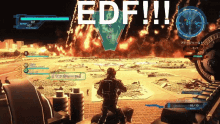

Page Le black out
Page le role d'edf
La création d'EDF
Quel est ladate de création d'EDF:
La date de création est le 8 avril 1946
- 1947: la première grande tâche du groupe est de reconstruire entièrement le réseau de transport
- 1950: Des conseillières managères enseignent dans les écoles l'éléctricité dans la vie quotidienne.
- 1953: Le 4 juillet, le barrage de Tignes est inauguré par le président Vinent Auriol.
- 1959: Construction du barrage de Serge-Ponçon
- L'heuphorie de la croissance, une petite vidéo expliquatif
explication

Résumer de la création :
- En 1946,l'état français a eu une idée lumineuse!: crée EDF!!
Pourquoi? Parceque qu'il fallait bien un peu d'ordre dans le courant!
Avant, chauque région faisait sa tambouille électrique: ici une dynamo,là un moulin,et parfois même une chandelle de secours
- Quand EDF est née, on a nationalisé tout ça.
Un grand ménage,comme quand tu ranges tes câbles USB: on ne sait pas lequel sert a encore, mais on prend tout.
Et hop!, EDF avait le monopole de la lumière.On pourrait dire qu'à l'époque, ils étaient les seuls
à brancher le monde.
- Mais attention EDF n'est pas arrivé toute seule: il y avait aussi GDF( gaz de france).
les deux travaillent mains dans la mains comme deux jumeaux."Toi tu chauffe moi je les éclaire!".
jusqu'à ce que gdf décide de travailler en solo. On dirait un divorce: EDF a gardé les ampoules etGDF le gaz!
- Et aujourd'hui? Eh bien EDF est l'un des pillier en France. Mais entre nous, à chaque facture, on se demande: "Ils n'ont pas eu
trop de jus là?"

